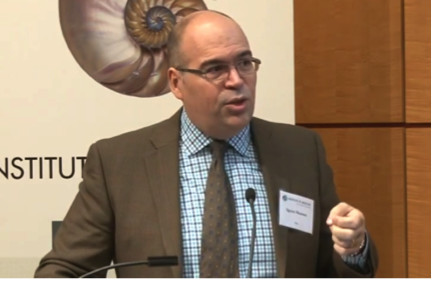
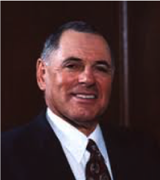
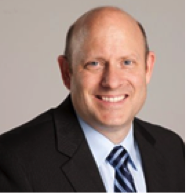
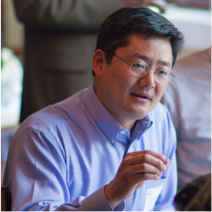

Rethink Cancer Drug Development
-
Systems Oncology is using a systems biology approach to expose vulnerable targets in the microenvironment of solid tumors, and leverage those insights to develop the next generation of cancer drugs.
-
Measure Success
Provide the proof of success of expanded access treatments
-
Ease Access
Advocating and improving patient access
Removing time and financial burdens which hinder patient access -
Build Community
Build true interconnected communities of patients and physicians
Build programs and 'hyperedges' of communities
Give patients new hope and options -
Program Improvement
Rollout success of Right-to-Try
Building communities
Measuring what works, and what does not
Tracking the technical and implementation issues
Results
-
Valuable Insights
Accurate, complete, solid data about what works for what patients
Molecular and genetic analytics -
Cancer Drugs
Drug development
R&D Support
Senior Management
-

Chief Executive Officer and Chief Scientific Officer
Dr. Mousses received his BSc (Pharmacology and Toxicology), MSc and PhD (Molecular Pathogenesis and Genetics of Cancer), from the University of Toronto. He served as Staff Scientist at the National Human Genome Research Institute, NIH, where he led a program in cancer genome scanning and high throughput technology development. After serving at the NIH, he joined the Translational Genomics Research Institute (TGen) at the inception of the Institute as one of the founding scientists (2002-2013). As TGen’s Director of the Pharmaceutical Genomics Division he led 8 laboratories and staff of 50 to develop more than 30 programs and directly collaborated with multiple pharmaceutical industry sponsors (including Lilly, GSK, Novartis, SanofiAventis, BMS, AstraZeneca) to drive research programs and conduct pharmacogenomics studies in support of drug discovery and development. He also founded biotech and IT companies (including Systems Medicine Inc. – a biotech company acquired by Cell Therapeutics Inc. in Seattle WA; MedTrust Online Inc. – acquired by Annai Systems Inc. Los Gatos, CA), and Systems Imagination Inc. (SII) – which currently offers Big Data to Knowledge services for the biotech and pharma industry.
-

Chief Medical Officer
Daniel D. Von Hoff, M.D., F.A.C.P. is a medical oncologist and oncology drug developer who has conducted national clinical trials with more than 200 new antineoplastic and biologic agents. Dr. Von Hoff's major interest is in the development of new anticancer agents, both in the clinic and in the laboratory. Dr. Von Hoff and his colleagues have conducted early clinical investigations of most of the new agents that have been approved for cancer treatment in the United States in the last two decades, including gemcitabine, docetaxel, paclitaxel, topotecan, irinotecan, fludarabine, mitoxantrone, dexrazoxane, vesmodegib, nab-paclitaxel, and multiple others. For more than 30 years, Dr. Von Hoff has dedicated his time and experience to the study of cancer and treatment methods. Among his significant activities:
1) International leadership in bringing to patients new anti-cancer agents – many of which have been shown to increase patient survival
2) Study of pancreatic and other forms of cancer
3) Dedication to teaching the next generation of both basic and clinical students
4) Entrepreneurial research efforts, which have led to 12 patents
Dr. Von Hoff most recently served a six-year term on President Bush's National Cancer Advisory Board (June 2004 - March 2010) and has served on the FDA’s Oncology Advisory Committee. He is the past President of the American Association for Cancer Research (the largest cancer research organization in the world), a Fellow of the American College of Physicians, and a member and past board member of the American Society of Clinical Oncology
-

Chairman of the Board
Dr. Ronald Anthony Matricaria, also known as Ron, is a Limited Partner at Lakeshore Capital Partners, LLC. Dr. Matricaria has a highly successful career in the healthcare industry and has spanned nearly four decades. From April 1993 to May 1999, he served as the President and Chief Executive Officer at St. Jude Medical, Inc. and served as its Chairman from January 1995 to May 2002. From 1970 to 1993, Dr. Matricaria served at Eli Lilly and Company Inc. and served as its Executive Vice President of the Pharmaceutical Division at Eli Lilly and Company and President of its North American operations and served in several roles including Chief Executive Officer at Lilly subsidiary Cardiac Pacemakers Inc. He serves as Treasurer of the Board at Phoenix Children's Hospital, Inc. He was the President at Eli Lilly International Corp. since July 1991. He has been Presiding Director at Life Technologies Corporation since 2011. He has been the Chairman of the Board of Orthofix International N.V. since March 2014. He has been Chairman of the Board and a Lead Director of Volcano Corporation since January 1, 2009. He served as the Chairman of LifeCell Corporation since January 2012 and oversees the implementation of a new management structure. Dr. Matricaria served as Non-Executive Chairman of Haemonetics Corp., from April 2003 to December 2006. He served as the Chairman of the Board of Kinetic Concepts Inc. until April 3, 2012. He served as Vice Chairman of the Board at Phoenix Children's Hospital, Inc. He serves as a Director of Phoenix Children's Hospital, Inc. He has been a Director at Volcano Corporation since October 2005, Invitrogen Corp. since July 22, 2004, and Life Technologies Corporation since July 2007. He has been a Director of Kinaxis Inc. since March 2014. He has been a Director of Centocor Ortho Biotech, Inc. since 1994. He serves as a Member of Advisory Board at Briteseed, LLC. He served as Director of Sensatex Inc. He served as a Director of Hospira Inc., since May 17, 2006. He served as a Director of VistaCare, LLC (VistaCare Inc.), from August 2002 to May 13, 2006, CardioDynamics International Corp., from May 2002 to July 21, 2005, Haemonetics Corp., from 2002 to December 2006, and Endocare Inc. He served as a board member of Home Depot Inc., Ceridian Inc., Diametric Medical Inc., Prolifaron Inc. and the Advanced Medical Technology Association (AdvaMed). He served as a Director of Cyberonics Inc., from June 2001 to July 23, 2005. Dr. Matricaria is an advisor or board member to several medically related privately owned companies and a private equity healthcare fund. He served as a Trustee emeritus of the University of Minnesota Foundation. Dr. Matricaria serves on the boards of several healthcare and medical technology companies and is active in many scientific, civic and charitable organizations including the National Foundation for Infectious Diseases, the National Retiree Volunteer Center, and The Indiana Repertory Theater. In 2002, Dr. Matricaria earned a Life Time Achievement award for his significant contributions to the healthcare industry. He serves as Lead Director and Director at Life Technologies Corporation. Dr. Matricaria is participated in the executive development programs at the University of Michigan, Graduate School of Business, and the Amos Tuck School of Business at Dartmouth College. He holds a Bachelor of Science degree in 1966 from the Massachusetts College of Pharmacy and was also awarded an honorary Doctor of Science degree in Pharmacy in recognition of his contributions to the practice of pharmacy.
-

Chief Legal Officer
Gavin has worked in life sciences industries for 25 years. He has been CEO of a public company and an intellectual property, regulatory, and licensing attorney. Through the course of his career, Gavin has been admitted to the bars of New York, the United States Patent and Trademark Office (as a Patent Attorney), and the Canadian Intellectual Property Office (as a Trademark Attorney), and is called to the bar in Ontario, Canada as a Barrister & Solicitor (by the Law Society of Upper Canada). His work as Special Counsel for the Newport Trial Group focuses primarily on representing corporate clients with an emphasis on intellectual property matters.
Gavin has extensive experience in all aspects of life sciences law, including pharmaceutical, biotechnology, diagnostics, research tools, and nutritional supplement matters.
He was Patent Counsel at Wyeth Pharmaceuticals in Cambridge MA, Senior Patent Attorney at Genetics Institute in Cambridge MA, and a patent attorney at a major New York IP firm where he worked on ANDA matters as well as other IP matters.
A graduate of the University of Toronto Law School, Gavin also has an MBA from the University of Toronto, a MS in molecular biology and a BS in genetics from The University of Western Ontario.
-

Chief Information Officer
Dr. Christopher Yoo, also known as Chris, Ph.D. serves as the Chief Executive Officer and President of MedTrust Online, LLC. Dr. Yoo serves as Senior Vice President of Business Development at Annai Systems Inc. Prior to Co-Founding MedTrust, Dr. Yoo served as Chief Executive Officer and Founder of TransMed Partners, LLC. With over seventeen years of scientific and business experience, he has led organizations from startups, to non-profits, to new business units within large multinational corporations. Dr. Yoo served as the General Manager of the InnovationXchange Network USA, and has held management roles as the Worldwide Director of Commercial Operations for Applied Biosystems' Molecular Biology business, and WW Strategy Executive for the Information Based Medicine EBO at IBM. He has been a key founder and executive in several biomedical content companies, including LabBook, where he served as Senior Director of Strategic Alliances. He serves as a Member of Board of Managers of MedTrust Online, LLC. In addition to his industry experience, he has published several articles in scientific journals, and completed a Jane Coffin Childs Memorial Cancer Research Postdoctoral Fellowship at U.C. Berkeley in functional genomics. Dr. Yoo received his Ph.D. from Yale University School of Medicine in Cell and Molecular Biology and his undergraduate degree from the University of Pennsylvania.
Next Steps
-
Partner
Develop key partnerships, governance, policies, and accessibility of data sources
-
Budget
Create a budget
-
Create a targetted portal
Coordinate launch of portal in a RtT area with physicians and practices
Limit access to patients within a specific disease area with many experimentals available and a significant population
Outreach within that limited community to build participation
-
Build
Build collection mechanisms
Build reporting and analytics within platform with specific gearing for physicians, pharma and patients -
Plan Expansion
Expanding Focus
Solutions based analytics
Business development